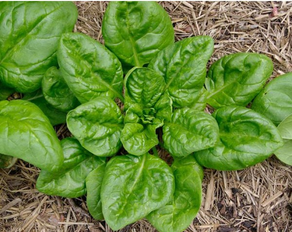

Tutorial Passo a Passo para Plantar e Cuidar de Cenouras
Passo 1: Escolha das Sementes Escolha sementes de cenoura de variedades adequadas ao seu clima e preferências de sabor. Existem variedades de raízes longas, curtas, arredondadas e de várias cores.
Passo 2: Preparação do Solo Escolha um local ensolarado no seu jardim com solo bem drenado e livre de pedras grandes. Antes de plantar, solte o solo até uma profundidade de pelo menos 30 centímetros para permitir que as cenouras se desenvolvam bem.
Passo 3: Plantio das Sementes Plante as sementes de cenoura diretamente no solo, espaçando-as cerca de 5 a 10 centímetros umas das outras. Faça sulcos rasos (cerca de 1 cm de profundidade) com uma pá ou um rastelo. Coloque as sementes no sulco e cubra com uma fina camada de solo solto.
Passo 4: Rega Regue delicadamente após o plantio para garantir que o solo esteja úmido. Continue regando conforme necessário para manter o solo levemente úmido durante o período de germinação, que geralmente leva de 1 a 3 semanas.
Passo 5: Desbaste Quando as plantas de cenoura estiverem com cerca de 5 cm de altura, faça um desbaste, removendo plantas extras para que as cenouras restantes tenham espaço suficiente para se desenvolverem.
Passo 6: Adubação Cenouras crescem melhor em solo rico em nutrientes. Durante o crescimento, você pode aplicar um fertilizante balanceado conforme necessário, seguindo as instruções do fabricante.
Passo 7: Manejo de Ervas Daninhas Mantenha o solo ao redor das cenouras livre de ervas daninhas que possam competir por nutrientes e água. Use técnicas manuais para remover as ervas daninhas ou aplique cobertura morta para ajudar a suprimi-las.
Passo 8: Proteção contra Pragas Monitore regularmente as suas cenouras em busca de sinais de pragas, como pulgões ou larvas. Use métodos de controle integrado de pragas, como remoção manual ou aplicação de produtos naturais, se necessário.
Passo 9: Colheita As cenouras estão prontas para colher quando atingem o tamanho desejado, geralmente entre 60 a 90 dias após o plantio, dependendo da variedade. Use uma pá ou um garfo de jardim para soltar o solo ao redor das cenouras antes de puxá-las para evitar que as raízes se quebrem.
Passo 10: Armazenamento Após a colheita, remova as folhas verdes das cenouras, deixando uma pequena haste para ajudar a preservar a frescura. Armazene as cenouras em um local fresco e úmido, como a geladeira, onde podem durar várias semanas.
Tutorial Passo a Passo para Plantar e Cuidar de Alface
Passo 1: Escolha da Variedade de Alface Escolha uma variedade de alface adequada ao seu clima e preferências de sabor. Existem muitas opções, incluindo alface crespa, lisa, romana (alface italiana) e iceberg.
Passo 2: Escolha do Local Alface cresce melhor em locais com sol pleno a parcial. Escolha um local com solo bem drenado e rico em matéria orgânica. Se você vive em uma região quente, considere plantar alface onde possa receber sombra parcial durante as horas mais quentes do dia.
Passo 3: Preparação do Solo Prepare o solo soltando-o com uma pá ou um garfo de jardim até uma profundidade de cerca de 15 a 20 centímetros. Adicione composto orgânico ou adubo bem decomposto ao solo para melhorar sua fertilidade e estrutura.
Passo 4: Plantio das Sementes ou Mudas Se estiver plantando sementes: semeie-as diretamente no solo, cobrindo-as com uma fina camada de terra. Mantenha o solo úmido até que as mudas apareçam. Se estiver plantando mudas: retire-as dos recipientes com cuidado e plante-as no solo preparado, garantindo que estejam niveladas com a superfície do solo.
Passo 5: Espaçamento Deixe espaço suficiente entre as plantas para permitir que cresçam confortavelmente. O espaçamento típico varia de 15 a 30 centímetros, dependendo da variedade de alface que você está cultivando.
Passo 6: Rega Mantenha o solo uniformemente úmido, regando regularmente conforme necessário para evitar que fique seco ou encharcado. Regue de manhã cedo ou à noite para reduzir a evaporação da água e minimizar o estresse hídrico nas plantas.
Passo 7: Fertilização Alface é uma cultura que se beneficia de um solo rico em nutrientes. Aplique um fertilizante balanceado conforme necessário, seguindo as instruções do fabricante.
Passo 8: Proteção contra Pragas Monitore regularmente suas plantas de alface para detectar sinais de pragas, como pulgões ou lesmas. Use métodos de controle orgânicos ou produtos específicos, se necessário.
Passo 9: Colheita A alface pode ser colhida quando as folhas estiverem maduras o suficiente para o seu gosto, geralmente 6 a 8 semanas após o plantio. Corte as folhas externas da planta na base com uma faca afiada ou tesoura de poda para permitir que as folhas internas continuem a crescer.
Passo 10: Manutenção Continue monitorando suas plantas de alface para manter um crescimento saudável. Remova folhas amareladas ou doentes conforme necessário para promover o crescimento de novas folhas.

Tutorial Passo a Passo para Plantar e Cuidar de Espinafre
Passo 1: Escolha das Sementes Escolha sementes de espinafre de variedades adequadas ao seu clima e época de plantio. Existem variedades de espinafre de crescimento rápido e lento, adequadas para diferentes condições de cultivo.
Passo 2: Escolha do Local e Época de Plantio Espinafre cresce melhor em locais com sol pleno a parcial, especialmente em climas mais frios. Plante espinafre na primavera para uma colheita precoce ou no outono para uma colheita tardia, dependendo da sua região.
Passo 3: Preparação do Solo Prepare o solo soltando-o com uma pá ou um garfo de jardim até uma profundidade de cerca de 15 a 20 centímetros. Adicione composto orgânico ou adubo bem decomposto ao solo para melhorar sua fertilidade.
Passo 4: Plantio das Sementes Plante as sementes de espinafre diretamente no solo, espalhando-as uniformemente sobre a superfície preparada. Cubra as sementes com uma fina camada de solo solto, pressionando suavemente para garantir contato com o solo.
Passo 5: Espaçamento Deixe espaço suficiente entre as fileiras para permitir que as plantas de espinafre se desenvolvam completamente. O espaçamento típico é de cerca de 5 a 10 centímetros entre as plantas.
Passo 6: Rega Mantenha o solo uniformemente úmido, regando regularmente conforme necessário para manter a umidade ideal para o crescimento das plantas. Evite que o solo fique encharcado, pois isso pode causar problemas como o apodrecimento das raízes.
Passo 7: Fertilização Espinafre não requer muita fertilização, mas você pode aplicar um fertilizante balanceado conforme necessário durante o crescimento, seguindo as instruções do fabricante.
Passo 8: Proteção contra Pragas Monitore suas plantas de espinafre regularmente para detectar sinais de pragas, como pulgões ou lagartas. Use métodos de controle orgânicos ou produtos específicos, se necessário.
Passo 9: Colheita O espinafre pode ser colhido quando as folhas são jovens e tenras, geralmente 4 a 6 semanas após o plantio, dependendo da variedade. Corte as folhas externas na base da planta com uma tesoura de jardinagem ou faca afiada para permitir que as folhas internas continuem a crescer.
Passo 10: Manutenção Continue monitorando suas plantas de espinafre para remover folhas amareladas ou doentes e para garantir um crescimento contínuo e saudável.
